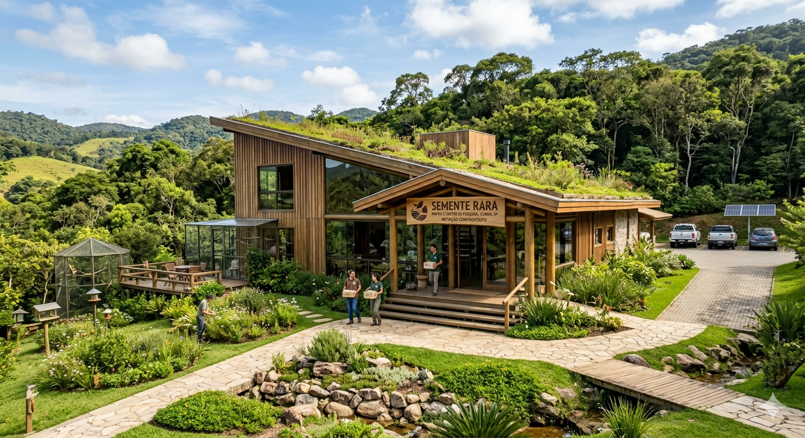
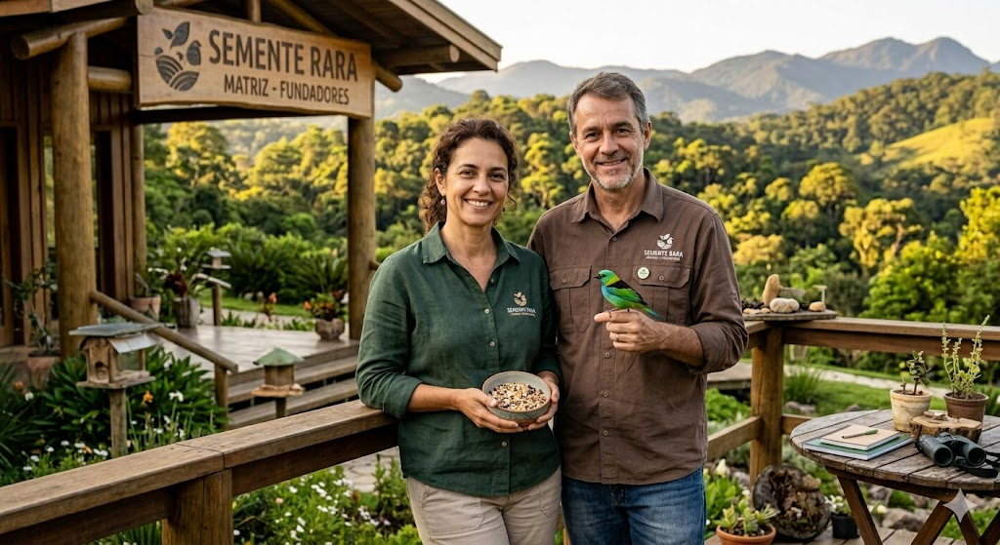

 <!DOCTYPE html>
<html lang="pt-BR"></html>
    <head>
        <meta charset="utf-8">
        <title>
            Semente Rara | Sobre nós
        </title>
        <link href="flor.kk.png" rel="icon">
        <link href="sobre.css" rel="stylesheet">
    </head> 
    <body>
        
        <h1 class= "título">Sobre a empresa</h1>
        <p>A Semente Rara nasceu da observação atenta da natureza e da paixão pelo canto que desperta as manhãs. Fundada em 2018 por biólogos e entusiastas da ornitologia, nossa missão é oferecer mais do que apenas alimento; entregamos vitalidade e longevidade para aves domésticas e silvestres.

        Acreditamos que cada espécie possui uma melodia única, e cada melodia exige um combustível específico. Por isso, nossas misturas são elaboradas com grãos selecionados, livres de conservantes artificiais e enriquecidas com superalimentos que respeitam o ecossistema original de cada ave.

        Nossos Pilares
        Pureza: Ingredientes 100% naturais e processos de triagem rigorosos.

        Equilíbrio: Fórmulas desenvolvidas para garantir penas brilhantes e energia constante.

        Sustentabilidade: Embalagens biodegradáveis e apoio a projetos de conservação da fauna local.

        Na Semente Rara, cuidamos do que voa para que o mundo nunca perca a sua cor.</p>
        <a href="https://maps.app.goo.gl/i7eZVu6Dp8CsXmdL7"> Nossa sede fica em Cunha, no interior de São Paulo</a>, em uma fazenda modelo cercada pela Mata Atlântica.
        <a href="index.html" >Entre em contato conosco.</a> 

        <figure class="matriz-empresa">
             <alt= Matriz da empresa></alt>
            <figcaption>Matriz da Semente Rara</figcaption>
        </figure>

        <h2 id="historia" class="fundadores" >História</h2>
        <figure class="fundadores">
            
            <figcaption> Fundadores </figcaption>
        </figure>
        <p>
            A história da Semente Rara começa em 2012, longe do agito corporativo, num pequeno observatório ornitológico nos arredores de Cunha.
            A história da Semente Rara começa em 2012, longe do agito corporativo, num pequeno observatório ornitológico nos arredores de Cunha.
            Conheça a nossa história <a href="#história">história.</a>
        </p>
        <p>
            Eles notaram que muitas misturas eram genéricas, repletas de conservantes e sem o equilíbrio nutricional necessário para cada espécie.
            O estopim foi um projeto de reabilitação de tucanos silvestres que sofriam de má nutrição.
            Elisa e Rodrigo decidiram, então, criar suas próprias misturas artesanais, usando grãos nativos e sem agrotóxicos. Os resultados foram surpreendentes:
            as aves recuperavam-se mais rapidamente, com penas mais vibrantes e energia renovada.
        </p>
        <p>
            Amigos e colegas ornitólogos começaram a pedir as misturas da dupla.
            Em 2018, a Semente Rara foi formalmente fundada, operando inicialmente como uma pequena boutique urbana em
            São Paulo, onde ofereciam consultorias nutricionais personalizadas e pacotes artesanais
        </p>
        <h2 id="diferenciais" class="subtítulo"> Diferenciais</h2>
        <ul>
            <li>1.Nutrição bio-específica desenvolvida para cada espécie.

        <li>2.Livre de transgênicos, corantes e conservantes artificiais.</li>

        <li>3.Ingredientes 100% naturais e superalimentos brasileiros.</li>

            <li>4.Embalagens sustentáveis e produção com baixo impacto ambiental.</li> 

        <li>5.Apoio direto a projetos de conservação de aves silvestres.</li> 

        <li>6.Rastreabilidade total desde o pequeno produtor até o pacote final.</li> 

        <li>7.Fórmulas enriquecidas com extratos botânicos que fortalecem a imunidade.</li>

        <li>8.Processo de triagem tripla para garantir grãos livres de poeira e fungos.</li>

        <li>9.Consultoria nutricional personalizada para criadores e tutores via app.</li>

        <li>10.Certificação de "Cruelty-Free" em todos os testes de palatabilidade.</li>
        </ul>
        <h2 class="título">Contato</h2>
        <h3 class="contato--subtítulo">Correspondência</h3>
        <small>(todos os dias, das 10h ás 16h)</small>
        <address>
            PixelForger Academy
            <br>
            Rua Pires da Mota, 838, 1º andar
            <br>
            Aclimação
            <br>
            São Paulo - SP
         </address>  
         
         <h3 class="contato__subtítulo">Telefones</h3>
         <small>(segunda á sexta, das 10h ás 15h)</small>
         <dl>
            <dt>Pessoa Física:</dt>
            <dd><a href="tel: //1199999-9999" >(11) 99999-9999</a>
                <dd>
                    <dd>
                        <a href="tel://1199999-9999">(11) 98888-8888</a>
                </dd>
         </dl>
    </body>
</html>


